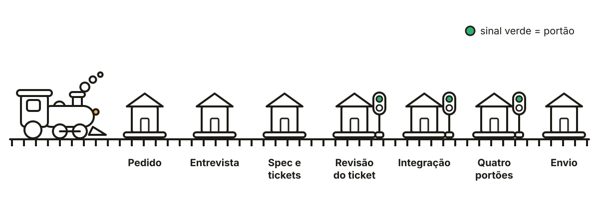
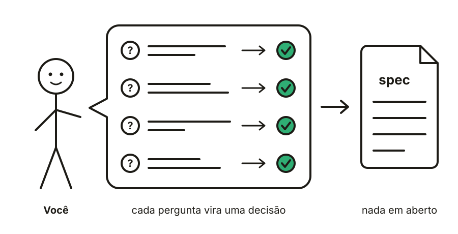
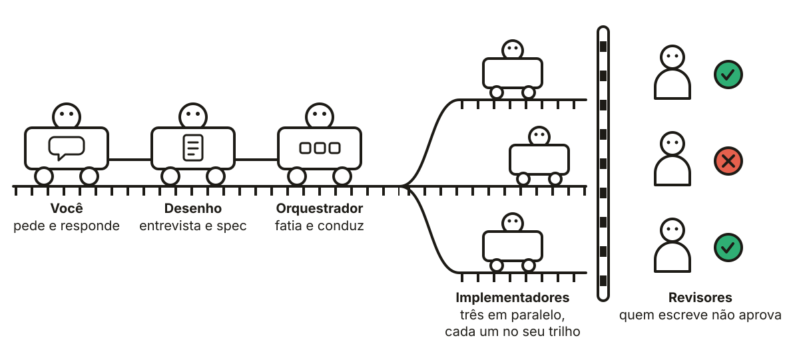
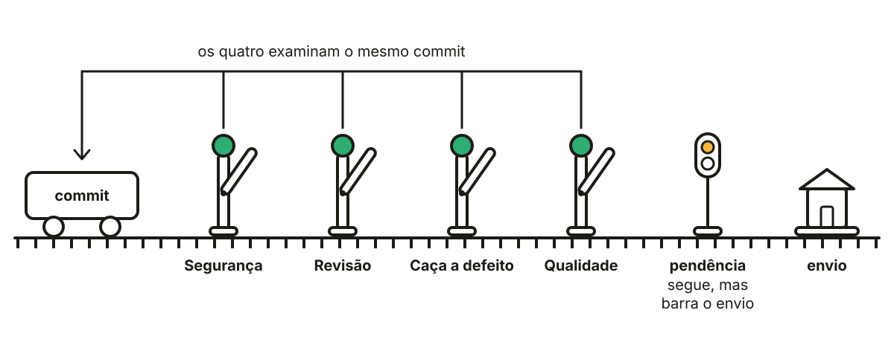

Trilhos para agentes que escrevem código.
Um plugin para o Claude Code. Você faz o pedido e responde a uma entrevista. O resto corre sozinho, e o que não passou pela revisão não sai da máquina.
- Pedidouma frase
- Entrevistaaté não sobrar decisão
- Spec e ticketscontrato primeiro
- Revisão do ticketantes de juntar
- Integraçãoum por vez, com checagem
- Quatro portõessobre o commit exato
- Envioe o aplicativo de pé
npx @fullchico/harness install .No seu terminal, na pasta do projeto. Precisa de git, Python 3, Docker e do Claude Code.
Instrução o agente interpreta. Trilho ele não atravessa.
Uma regra escrita num arquivo de instruções depende de o agente ler, lembrar e decidir obedecer. O harness tira do texto tudo o que uma máquina consegue conferir e entrega isso a hooks, guards e scripts, que recusam em vez de pedir.
-
Quem escreve não aprova
A aprovação nasce do veredito de um revisor de contexto novo, que não viu a conversa de quem implementou. Um hook grava esse veredito num lugar onde nenhum agente escreve.
-
Nada sai sem os portões
O shell do agente roda no sandbox do Claude Code, sem rede para o servidor de git. O único caminho até o remoto é
.harness/push, que exige quatro vereditos sobre o commit. -
Paralelismo por contrato, um dono por arquivo
O ticket de contrato fecha antes de os outros começarem. Cada ticket declara as pastas que possui, dois tickets paralelos nunca possuem o mesmo caminho, e a integração recusa a branch que mexer fora da posse.
Você pede, responde à entrevista e recebe pronto
O comando /harness:entregar conduz a mudança da entrevista ao pull request. A sua parte é o começo. A execução corre sem você.
Pedido
Uma frase, numa sessão do Claude Code aberta no worktree da feature.
Entrevista
A sessão pergunta até não sobrar decisão em aberto, escreve a spec e a manda para revisão. Você resolve os achados e aprova.
Pronto
Volta o link do pull request, o endereço do aplicativo que ficou de pé, o que entrou e o que ficou de fora. O merge é seu.

Um exemplo de conversa
Ilustrativo e encurtado: as perguntas mudam conforme o pedido, e o endereço vem das portas da feature.
- Você
/harness:entregar quero um sistema de agendamento para uma barbearia - Claude, na entrevistaO cliente marca o horário sozinho ou só a barbearia marca? Recomendo que o cliente marque, com a barbearia podendo ajustar.
- VocêO cliente marca.
- Claude, na entrevistaHá mais de um barbeiro? Se houver, o horário pertence ao barbeiro e dois clientes podem marcar a mesma hora com pessoas diferentes.
- VocêSão três barbeiros, cada um com a sua agenda.
- Claude, na entrevistaAté quando o cliente pode cancelar, e o que acontece com o horário cancelado?
- VocêSegue com o recomendado até o fim.
- Claude, no relato finalEntrega concluída.
- Branch aprovada nos quatro portões e pull request aberto.
- Aplicativo de pé em
http://localhost:3210, com o usuário de teste. - Para parar:
.harness/down. - As decisões tomadas sem você estão na spec.
- Onde você é chamado
- Para aprovar a spec, para remover um ambiente (que apaga dados) e para fazer o merge.
- Seguir sem você
- Se você disser "segue até o fim", toda pergunta recebe a resposta recomendada, a aprovação da spec deixa de ser uma parada, e cada decisão fica escrita na spec, na seção "Decisões tomadas sem o dono". Os portões, as revisões e o sandbox não mudam.
- Projeto sem remoto
- A entrega vai até o fim: os portões são conferidos, a branch fica aprovada e o aplicativo fica de pé. Só o envio e o pull request esperam.
- Quando ela para
- Se um ticket não fecha em três rodadas de correção, ou se falta um dado que só você tem.
A entrevista vem antes de qualquer código
Quem executa não tem a quem perguntar. O orquestrador recebe só a spec: o que ficou na conversa não chega até ele. Por isso as decisões se fecham antes.

O grilling. A entrevista é conduzida com a skill grilling, do plugin de terceiros mattpocock-skills, até não sobrar decisão em aberto. O harness a usa como ela é, sem adaptação.
O vocabulário. A skill domain-modeling, do mesmo plugin, registra os termos no GLOSSARY.md e as decisões difíceis de reverter em ADRs.
Bug é outro caminho. Se o pedido é um bug, a skill diagnosing-bugs entra no lugar da entrevista. Não há spec nem tickets, mas a checagem, a revisão e o envio valem do mesmo jeito.
O que sai dela
Uma spec por mudança, em docs/specs/<slug>/spec.md, escrita para alguém que vai implementar sem ter visto a entrevista.
Critérios de aceite
Numerados, do ponto de vista de quem usa. Cada um vira um teste de ponta a ponta, e é essa suíte que protege o que já funciona nas entregas seguintes.
Módulos e contrato
Os módulos do back e as fatias do front, cada um com a sua pasta. É daí que sai a posse de cada ticket. O contrato entre front e back e entre módulos fica definido antes de qualquer implementação.
Decisões registradas
Cada escolha feita na entrevista, com o motivo. As decisões de teste dizem por onde cada comportamento é testado, e o que não entra fica dito em "Fora de escopo".
Ambiente e execução
Os serviços de que os testes dependem e como cada implementador isola o seu quando vários rodam ao mesmo tempo.
A spec é revisada antes de a execução começar
O revisor-spec recebe a spec e nada da conversa. Ele aponta o que falta ou está ambíguo, você resolve cada achado e aprova. Só então o orquestrador é disparado.
Quem implementa não aprova
Todo subagente nasce sem a conversa, entrega o trabalho e não valida o próprio resultado. O pedido a cada um só aponta para documentos: a spec, o ticket, o diff, o commit. O modelo caro fica onde ele paga.

Você, o dono
pessoaFaz o pedido, responde à entrevista, aprova a spec e faz o merge. Também é quem autoriza remover um ambiente, porque isso apaga dados.
A sua sessão
o modelo da sessãoConduz a entrevista e escreve a spec, onde o raciocínio mais caro paga. Depois entrega a execução e não revisa o que mandou fazer.
o modelo da sessãorevisor-specLê a spec sem a conversa que a produziu, como alguém que vai implementá-la sem poder perguntar, e aponta o que falta ou está ambíguo.
sonnetorquestradorRecebe só a spec aprovada. Fatia em tickets, despacha os implementadores em paralelo, integra, checa, chama os revisores e envia.
haikuimplementadorImplementa um ticket numa cópia própria do repositório, só com a spec e o ticket. O ticket de contrato e as rodadas de correção vão em Sonnet; reprovado duas vezes, em Opus.
sonnetrevisor-bugsCaça defeito: código que dá resultado errado, quebra ou perde dado. Lê cada ticket antes de integrar e a branch inteira antes do envio.
opusrevisor-ambienteSó no ticket de contrato. Procura o que funciona na pasta de quem escreveu e não funcionaria numa cópia limpa do repositório.
sonnetsegurancaRevisão de segurança sobre o diff da branch, sem a conversa de quem escreveu. O veredito libera ou barra o envio.
sonnetrevisorRevisão de código em dois eixos: os padrões do repositório e a aderência à spec.
haikuqualidadeRoda a checagem completa do projeto no commit pedido e atesta que ela passa. Não revisa, não opina e não corrige.
Revisão no mesmo contexto não é revisão. Quem escreveu não revisa, e a sessão que orquestrou também não. Se quem implementa não consegue construir só com a spec e o ticket, a lacuna se corrige no documento, não numa explicação por fora.
Quatro vereditos sobre o mesmo commit
Commit local é livre. O envio exige os quatro vereditos sobre o commit do topo da branch, e um commit novo pede todos de novo.

Segurança
O
segurancarevisa o diff da branch inteira, da base ao topo.Revisão de código
O
revisorjulga os padrões do repositório e a aderência à spec.Caça a defeito
O
revisor-bugsprocura o que só aparece olhando os módulos juntos e confere cada pendência aberta.Qualidade
O
qualidaderoda a checagem completa naquele commit: testes de unidade e de integração, fronteiras, build e ponta a ponta.
Todo revisor termina a resposta com este bloco. É dele que o hook grava a aprovação.
VEREDITO: APPROVED (ou REJECTED) COMMIT: <hash completo do commit revisado> RESUMO: <uma linha>
- Cada ticket é revisado antes de integrar
- A branch de cada implementador passa pela caça a bugs. O
.harness/integraterecusa a que não passou naquele commit, confere a posse, junta, roda a checagem e desfaz a junção se ela falhar. - O ticket de contrato tem duas leituras
- Ele define o que todos os outros seguem. Por isso é lido ao mesmo tempo pelo
revisor-bugs, que procura defeito de comportamento, e pelorevisor-ambiente, que procura o que só funciona na pasta de quem escreveu. A integração exige as duas. - Pendências
- Achado simples não reprova: o revisor aprova e registra a pendência, com o teste que a pegaria. São no máximo duas abertas por ticket; passou disso, a aprovação não é gravada. Enquanto houver uma aberta o envio é recusado, e só um revisor a fecha.
- Rodadas de correção
- Reprovação vira rodada de correção para aquele ticket, com o achado gravado em arquivo. O limite é de três por ticket; na quarta a entrega para e relata o que travou.
- Funcionalidade nova traz a spec
- Uma branch com commit
featprecisa trazer a spec da mudança, ou o envio é recusado.
O que ele recusa
Cada linha abaixo é uma recusa de verdade, feita por hook, guard ou script, e coberta por teste.
- Quem escreveu o código aprova o próprio trabalho
- A aprovação é gravada por um hook, a partir da resposta de um revisor que não viu a conversa de quem implementou. Nenhum agente alcança o registro.
- Envio sem os quatro vereditos
- Segurança, revisão, caça a defeito e qualidade, todos sobre o mesmo commit. Um commit novo pede tudo de novo.
- Um ticket mexe no arquivo de outro
- Cada ticket declara o que possui. A integração recusa a branch que saiu da posse, e conflito não se resolve à mão.
- Um módulo entra por dentro de outro
- De outro módulo só se importa a entrada pública. A checagem é do harness, não uma regra que o projeto possa afrouxar.
- Desligar uma checagem que não passa
- Checagem já gravada pode mudar de comando, não sumir. A proposta que a remove é recusada.
- Implementador sobe ambiente, envia ou abre pull request
- Isso é de quem conduz a entrega. Revisor também não troca o commit do worktree, que é de todos.
- Defeito pequeno, que não justifica parar tudo
- Vira pendência registrada, no máximo duas por ticket, com o teste que a pegaria. Enquanto houver uma aberta, o envio é recusado.
- Várias compilações ao mesmo tempo
- A checagem pesada entra numa fila da máquina. Sem isso, três agentes em paralelo esgotam a memória.
O que vem junto
O instalador registra o plugin do harness e os de terceiros de que ele depende, e copia para o projeto as skills da stack, fixadas no skills-lock.json.
Plugins de terceiros
mattpocock-skills- O processo:
grillingedomain-modelingna entrevista,tddna implementação,diagnosing-bugspara bugs eprna abertura do pull request. Traz ainda skills avulsas, comocode-review,prototypeeresearch. ponytail- Fica sempre ligado e segura o tamanho do código que o agente escreve. O
ponytail-reviewdá ao revisor os critérios de duplicação e enxugamento. frontend-design- A direção visual das telas, usada por quem implementa o front.
rtk- Não é plugin, é um binário recomendado. Se estiver instalado, um hook comprime a saída de git e de testes.
Skills da stack, por papel
São vinte, de seus autores, no perfil padrão fullstack-typescript: NestJS, Drizzle, Postgres e BullMQ no back; Next.js, shadcn e Tailwind no front; Zod no contrato; Vitest e Playwright nos testes; pnpm no monorepo.
Arquitetura e fatiamento
hexagonal-architecture: use case, portas e adaptadores no back.feature-sliced-design: camadas, fatias e entrada pública no front.parallel-feature-development: um dono por arquivo, contrato primeiro.
Quem implementa o back
nestjs-best-practices: módulos, injeção, erros e testes.drizzle-orm-patterns: acesso a banco.supabase-postgres-best-practices: esquema e consultas no Postgres.bullmq: filas.
Quem implementa o front
nextjs-app-router-patterns: componentes de servidor e de cliente.vercel-react-best-practices: React e desempenho.shadcn: componentes de interface.
Contrato e base
zod: validação e contrato.pnpm: monorepo e dependências.seo: SEO técnico nas páginas públicas.
Testes
vitest: unidade e integração.playwright-best-practices: ponta a ponta.property-based-testing: regra com borda, como data, dinheiro e intervalo.
Quem revisa e quem fecha
clean-code-guard: a rubrica do revisor de código.accessibility: acessibilidade, na revisão de código.owasp-security: lista do que procurar, na revisão de segurança.write-pr-description: o texto do pull request.
Perfis
fullstack-typescript, o padrão- Projeto novo na stack padrão: traz a arquitetura, o arquivo da stack e as skills dela.
livre- Projeto novo em outra stack: traz os conceitos de arquitetura, e a stack é escolhida na spec.
existente- Projeto que já tinha código: processo e proteção, sem impor arquitetura nem língua.
O núcleo vale nos três: sandbox, portões do envio, tickets com posse de arquivo, contrato primeiro e paralelismo. Além disso, cada feature ganha o próprio ambiente Docker, com portas e projeto isolados.
Dois passos até a primeira entrega
Um comando, no seu terminal
Na pasta do projeto, que precisa ser um repositório git. Ele grava os arquivos, registra o plugin e instala as skills. O remoto pode vir depois.
npx @fullchico/harness install .Abra o Claude Code e faça o pedido
Na primeira vez ele pergunta se você confia na pasta. A entrevista fecha as decisões, e a execução segue sem você.
/harness:entregar quero um sistema de agendamento para uma barbearia
Prefere que o Claude faça a instalação?
Cole este pedido numa sessão do Claude Code aberta na pasta do projeto.
Instale o FullChico Harness neste projeto e deixe-o pronto para a primeira entrega. Pare se algo falhar, mostrando o erro exato. 1. Confira os pré-requisitos: esta pasta é um repositório git (se não for, pergunte antes de criar um), e existem `python3`, `node`, `docker compose` e `claude`. Diga o que falta. 2. Rode `npx @fullchico/harness install .` fora do sandbox do Bash, pedindo a minha permissão: o instalador precisa alcançar o GitHub para registrar o plugin, e dentro do sandbox isso é bloqueado. Um comando só faz tudo: grava os arquivos, registra o marketplace e instala o plugin e as skills. 3. Confira o que foi gravado: `.harness/`, `.claude/settings.json`, `.claude/skills/`, `AGENTS.md`, `CLAUDE.md` e `harness.conf`. Não edite arquivo gerenciado pelo harness. 4. Faça o commit do que foi gerado, numa branch. 5. Peça-me para reiniciar o Claude Code nesta pasta, para o plugin e os hooks carregarem. No fim, relate em poucas linhas o que foi instalado e o comando para começar a primeira entrega: `/harness:entregar <o que eu quero construir>`, num worktree de feature.
O que já foi provado, e o que ainda não
Este projeto é novo. Melhor você saber disso por aqui do que no meio de uma entrega.
Conferido
- Os mecanismos de recusa, por uma suíte de mais de 450 testes que roda a cada versão.
- Entregas de projeto novo do começo ao fim, em sessões reais, com vários tickets em paralelo.
- A instalação por
npxnum projeto de verdade.
Ainda não
- Uma segunda entrega sobre código que já existe, que é o uso do dia a dia.
- Perfis fora do fullstack TypeScript (NestJS, Next.js, Postgres).
- Achar o defeito continua sendo trabalho de um revisor, que é um modelo. O trilho garante que a revisão aconteceu e teve consequência, não que ela viu tudo.